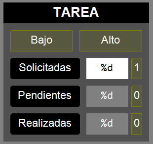

Esta sección describe un enfoque modular para
estructurar proyectos de automatización en TwinCAT 3, utilizando Function
Blocks (FBs) basados en Sequential Function Chart (SFC).
Tomaremos como ejemplo el control de una estación
SMC FMS203, pasando de una implementación monolítica (toda la lógica de control
en un único FB) a una estructura modular.
En proyectos iniciales o más simples, es común
implementar toda la lógica de control dentro de un único POU (Program
Organization Unit), a menudo un solo Function Block grande.
Si bien esto puede parecer directo al principio, presenta
desventajas a medida que el proyecto crece:
Baja Legibilidad: Un
FB grande con muchas responsabilidades se vuelve difícil de entender
y seguir.
Difícil
Mantenimiento: Modificar una parte puede afectar
inesperadamente a otras. La depuración es compleja.
Poca Reutilización: Es
complicado extraer partes específicas para usarlas en otros
proyectos o estaciones.
Complejidad en
Pruebas: Probar funcionalidades específicas de forma
aislada es casi imposible.
La estructuración modular, como la
implementada en los FBs proporcionados, aborda estos problemas dividiendo la
funcionalidad en bloques más pequeños y manejables, cada uno con una
responsabilidad clara.
Beneficios del Enfoque Modular:
Claridad: Cada FB
realiza una tarea específica (ej. Cargar Base, Prensar Rodamiento).
Reutilización: Los FBs
de tareas pueden ser reutilizados en otras estaciones o proyectos
con lógica similar.
Mantenimiento: Los
cambios se localizan en FBs específicos, reduciendo el riesgo de
efectos secundarios.
Testabilidad: Cada FB
puede probarse individualmente (si se diseña adecuadamente).
Colaboración: Diferentes desarrolladores pueden
trabajar en distintos FBs simultáneamente.
Objetivos
Implementar la secuencia completa de funcionamiento
de la estación (producción normal) distribuida en varios componentes (tareas).
Estructurar el código en distintos FBs, uno para
cada tarea, donde se implementa un comportamiento (funcionalidad) con sentido en
sí mismo y reutilizable (ej. situar palé).
Para coordinar el funcionamiento de cada una de las
Tareas se dispondrá de un Coordinador que
indicará en cada momento qué Tareas deben realizarse.
El acceso al hardware se realiza en el FB
de la Estación, que debe coordinar el uso compartido del mismo
por parte de los distintos FBs.
Las Tareas (rutinas) y el
Coordinador disponen de parámetros de entrada y salida para
comunicarse entre sí.
Requisitos
El programa debe mantener todas
las funcionalidades del nivel anterior (Monolítico)
El programa debe incluir:
Un pograma MAIN en
ST
Un FB Estación en
ST
Un FB Coordinador en
SFC que se encarga de coordinar el funcionamiento de
las Tareas
Un conjunto de FBs para las
Tareas implementados en SFC
Una Visualización
El programa debe permitir conmutar
entre modo manual (se puede actuar sobre la estación desde la
visualización) y modo automático (el programa produce) mediante
el conmutador del Panel del Operador en el frente de la
estación.
El programa debe considerar las
Condiciones Iniciales (CI) y la Condición de
Marcha (CM) antes de permitir que la estación comience a
producir.
Las CI engloba a todas
aquellas señales que deberían estar activas (o inactivas) en la
estación para considerar que cumple con todos los requisitos de
seguridad y operatividad necesarios para empezar a producir.
Son de especial relevancia aquellas señales que determinan
la posición de los actuadores biestables.
CondicionesIniciales := ManipuladorArriba AND EstacionConectada;
La CM indica aquellas
condiciones que debe cumplirse para que la estación comience a
producir (una vez satisfechas las CI).
CondicionMarcha := (UnidadesSolicitadas>0);
Cada grupo deberá identificar las
CI y la CM particular para su
estación.
La visualización debe mostrar el valor de las
siguientes variables de la tarea:Panel de la tarea
UnidadesSolicitadas:
Variable que contiene el número de piezas que se quieren producir en
un lote. Debe poder ser editada desde la
visualización.El programa debe ser
capaz de, tras pulsar el Pulsador de Marcha,
producir el número de piezas especificado en esta variable. Esto se
denomina Producción por Lotes.
UnidadesPendientes:
Contador que toma inicialmente el valor de
UnidadesSolicitadas y se decrementa cada vez que se
produce una pieza. Se reinicia cada vez que se acaba el lote.
UnidadesRealizadas:
Contador que empieza en cero y se incrementa cada vez que se produce
una pieza. No se reincia cada vez que acaba el lote.
UnidadesRechazadas: (si
aplica). Contador que empieza en cero y se incrementa cada vez que
se rechaza una pieza. No se reinicia cada vez que acaba el lote.
Selección de las piezas a producir
(ejemplo: rodamiento alto o bajo).
La visualización debe incluir, en su parte
inferior, una serie de indicadores y botones que permiten conocer el
estado de las condiciones de la estación y modificar su comportamiento:
CI: Indicador que muestra
si se cumplen o no las condiciones iniciales.
CM: Indicador que muestra
si se cumple o no la condición de marcha.
Ciclo [toggle]: Botón que indica que la
estación debe operar Ciclo a Ciclo, esto es, debe
parar entre cada iteración del lote hasta que se pulse el
Pulsador de Marcha. Debe seguir produciendo el
número de piezas que se especificó para el lote.
Pause [toggle]: Botón que pausa la
estación en su estado actual. Relacionado con SFCPause.
Reset [tap]: Botón que reinicia la
estación y la devuelve a su estado inicial. Relacionado con
SFCReset.
La visualización debe permitir, en la sección
PARÁMETROS, introducir los valores de los tiempos
utilizados en todos los FBs del programa, con el formato de las
variables de tipo TIME
Duración estimada: 6 - 8 sesiones
Jerarquía del Proyecto
Estructurado
MAIN (Programa Principal):
Es el punto de entrada.
Su única responsabilidad es declarar una variable de
tipo FB_Estacion e instanciarla.
FB_Estacion (FB principal):
Actúa como el centro neurálgico de la estación.
Declara todas las variables de
Entrada/Salida (E/S) físicas (AT %I*, AT %Q*).
[NUEVO]
Declara e instancia todos los FBs necesarios:
FB_Coordinador_SFC
Todos los FBs de tareas:
FB_SituarPale_SFC, FB_CargarBase_SFC, etc.
[NUEVO]
Conecta las E/S físicas a las variables de interfaz
(entradas y salidas) de los FBs de tareas.
[NUEVO]
Gestiona el paso de señales de control y
sincronización entre el coordinador y los FBs de tareas.
Define parámetros globales de la estación (tiempos,
modos, etc.).
[NUEVO]
FB_Coordinador_SFC (FB
Coordinador):
Orquesta la secuencia general de operación.
Define el flujo principal del proceso mediante un
SFC.
Activa los FBs de tareas en el orden correcto usando
sus señales Execute.
Espera la finalización de cada tarea monitorizando sus
señales Done.
Gestiona la lógica de producción (ej. contar unidades,
bucles).
[NUEVO]
FB*_xxx_SFC (FBs de
Tareas)
(ej. FB_CargarBase_SFC):
Cada grupo deberá decidir cómo divide el funcionamiento
de su estación en un conjunto adecuado de Tareas y creará un
conjunto de FBs que las implemente.
Implementan la lógica secuencial detallada para una
operación específica.
Contienen un SFC que describe los pasos
para completar su tarea.
Reciben una señal Execute para iniciar su
secuencia.
Señalan su finalización con una
señal Done.
Utilizan un patrón de
handshakeReady/Execute y Done/Ack para
sincronizarse con el coordinador.
Leen sensores y activan actuadores necesarios para su
tarea (a través de variables conectadas en FB_Estacion).
FB_Clock: Generador de onda cuadrada.
Se utiliza para conseguir una señal binaria que alterna
su valor a lo largo del tiempo, a una frecuencia determinada.
Podemos utilizar su salida para conseguir que una
lámpara parpadee o que un avisador suene intermitentemente.
CLK: FB_Clock;
-------------------------------------------------------
LamparaMarcha := CondicionInicial AND CLK.Q;
CLK();
Estructura estándar de un FB
de Tarea en SFC
Tanto el FB Coordinador como los FBs de tareas
(FB_CargarBase_SFC, FB_SituarPale_SFC, etc.) siguen una
estructura SFC común diseñada para la sincronización:Estructura genérica de un FB
Etapa
Initial:
Es el estado de reposo del FB.
Se activa la salida Ready, que indica
que el FB está listo para recibir una orden.
La primera transición espera la señal de
entrada Execute, que será activada por otro bloque funcional.
Etapas Intermedias
(S1, S2,
...):
Implementan la lógica de control
secuencial del FB.
Activan/desactivan las salidas necesarias
(actuadores) mediante acciones memorizadas o no memorizadas.
Las transiciones entre pasos esperan condiciones de
proceso (sensores, temporizadores, o señales de sincronización como las señales
Done de otros FBs en el caso del FB_Coordinador_SFC).
Etapa
End:
Es el estado final de la secuencia de la tarea.
Se activa la salida Done para indicar
que la lógica de control del FB ha finalizado.
La última transición espera la señal de entrada Ack (acuse
de recibo del FB que lo llama):
Para los FBs de tareas, esta señal
normalmente se gestiona en el nivel superior (FB_Estacion)
poniéndola a TRUE cuando su correspondiente
Execute es FALSE. Esto asegura que el FB de
tarea vuelve a Initial sólo después de que el coordinador
haya visto la señal Done y haya retirado la
orden Execute (ha pasado a la siguiente etapa).
Para el FB_Coordinador, no hay
nadie que le haya comandado funcionar, así que se le asigna el valor
TRUE directamente para que vuelva a su etapa
Initial.
Acceso a señales de
hardware
IMPORTANTE: Nótese que todas las variables de
acceso al hardware están declaradas en FB_Estaciony no en el
resto de FBs. Con esto conseguimos compartir el acceso a determinados sensores
o actuadores desde distintos bloques funcionales.
Un punto clave es cómo un FB de un tarea
(ej. FB_CargarBase_SFC) puede acceder al hardware de la estación si la
declaración de las variables que tienen dicho acceso está situada
en FB_Estacion.
Para las salidas (actuadores),
La conexión entre las señales de la tarea y las que
tienen acceso al hardware (ej. ManipuladorSucciona AT %Q*,
declarada en FB_Estacion) se realiza en el
propio FB_Estacion.
Declaración de variable de
salida:FB_Estacion declara la variable que va a estar
conectada a la salida física utilizando la especificación AT %Q*.
También declara una instancia del FB de la tarea:
// En FB_Estacion
VAR
ManipuladorSucciona AT %Q*: BOOL; // variable conectada a la salida
CargarBase: FB_CargarBase_SFC; // FB de la tarea
END_VAR
Declaración en la
tarea:FB_CargarBase_SFC declara una salida lógica con
el mismo propósito (nótese que esto es solo una variable booleana,
sin acceso directo al hardware ya que no está
declarada con AT %Q*):
// En FB_CargarBase_SFC
VAR_OUTPUT
ManipuladorSucciona: BOOL; // señal sin acceso directo a la salida
END_VAR
Conexión
en FB_Estacion: En
la implementación ST de FB_Estacion, se conectan
ambas:
// En la implementación ST de FB_Estacion
ManipuladorSucciona := CargarBase.ManipuladorSucciona;
Para las entradas (sensores, pulsadores), el proceso es
análogo:
Declaración física
en FB_Estacion (AT %I*) e instancia del FB de la
tarea.
// En FB_Estacion
VAR
ManipuladorSucciona AT %Q*: BOOL; // del ejemplo anterior
ManipuladorVacio AT %I*: BOOL; // variable conectada a la entrada
CargarBase: FB_CargarBase_SFC; // FB de la tarea
END_VAR
Declaración de interfaz en el FB de tarea
(VAR_INPUT).
// En FB_CargarBase_SFC
VAR_INPUT
ManipuladorVacio: BOOL; // señal sin acceso directo a la entrada
END_VAR
Conexión en FB_Estacion pasando la
entrada física a la entrada del FB de la tarea en la llamada a la instancia de
éste último:
// En la implementación ST de FB_Estacion
CargarBase(
// ...
ManipuladorVacio := ManipuladorVacio, // pasamos el valor del sensor
// ...
);
Gestión
de SFCReset y SFCPause
Estas son entradas especiales proporcionadas
por TwinCAT para FBs basados en SFC (se les denomina SFC-Flags).
Permiten un control externo sobre la ejecución del código SFC.
SFCPause (BOOL):
Si se pone a TRUE, el
SFC congela su estado actual.
Los temporizadores de los pasos activos
(S1.t,S2.t, etc.) dejan de contar.
Las acciones
activas continúan ejecutándose.
Las transiciones no se evalúan, es
decir, el SFC no avanzará a pasos siguientes.
Cuando SFCPause vuelve
a FALSE, el SFC reanuda la ejecución desde donde se quedó (los
temporizadores continúan, las transiciones se evalúan).
En el ejemplo de la estación
203, FB_Estacion recibe una señal PausaEstado y la
pasa a la entrada SFCPause de todos los FBs SFC relevantes
(Coordinador, SituarPale, etc.), siempre que
no esté activo ReiniciaEstado.
SFCReset (BOOL):
Si se pone a TRUE, el
SFC fuerza el retorno al paso inicial (Initial).
Todas las acciones se desactivan (como si se
saliera de los pasos activos).
Las variables internas del SFC
(como S1.x o S1.t) se reinician.
El SFC permanecerá en el
paso Initial mientras SFCReset esté
a TRUE.
Normalmente, SFCReset se activa con un
pulso (tap) o se mantiene activo durante la condición de reinicio.
En el ejemplo de la estación
203, FB_Estacion recibe ReiniciaEstado y lo pasa a la
entrada SFCReset de todos los FBs SFC.
En nuestra implementación de ejemplo de la estación 203,
PausaEstado y ReiniciaEstado están controlados por dos botones
situados abajo a la derecha en la visualización.
Implementación Típica:
Como se ve en FB_Estacion, estas
señales (PausaEstado, ReiniciaEstado) suelen venir de
la lógica de control general de la máquina (HMI, pulsadores de control) y se
distribuyen a todos los FBs SFC que necesiten ser pausados o
reiniciados conjuntamente.
// En la implementación ST de FB_Estacion (ejemplo simplificado)
Coordinador(
SFCPause := NOT ReiniciaEstado AND PausaEstado,
SFCReset := ReiniciaEstado,
// ...
);
SituarPale(
SFCPause := NOT ReiniciaEstado AND PausaEstado,
SFCReset := ReiniciaEstado,
// ...
);
// ... y análogamente para todos los demás FBs SFC
Crear un bloque funcional para la Estación
Nombre: FB_Estacion
Lenguaje: ST
Variables:
Declarar las variables de la tabla de E/S
en las imágenes de E y S (AT %I* y AT %Q*).
Recuerda
que este FB
es el que tiene el control del hardware.
Declarar una variable para el
Coordinador y otra para cada uno de los FBs de
Tareas (CargarBase, etc.).
Implementación:
Determinar si estamos trabajando en modo
manual o automático, usando la variable asociada al selector de modo.
IF NOT SelectorManual THEN
// Codigo automatico
END_IF
En modo automático
Instanciar el
FB_Coordinador_SFC, pasándole como entrada las
señales Done de las tareas (morado) y las variables
declaradas en FB_Estacion que vayan a
utilizarse en el coordinador (naranja). Presta
especial atención a las condiciones que manejan su señal de
Execute.
Instanciar cada una de los FBs
de Tareas pasándole como entrada los valores de los sensores
necesarios para cada FB (morado) y otras
variables declaradas en FB_Estacion que vayan a
utilizarse en el FB (naranja).
// Parametros de salida
CondicionInicial := EstacionConectada
AND ManipuladorMedio
AND IntroductorDetras
AND ExtractorDetras
AND PrensadorArriba;
CondicionMarcha := (UnidadesSolicitadas > 0);
Realizar una visualización para el programa
Esta visualización es idéntica a la del nivel
monolítico (solo cambia la etiqueta de arriba a la derecha).
Visualización del nivel estructurado
Todas las señales deben estar representadas
Decidir si los botones deben ser Tap o
Toggle
Incluir el visor del número de ciclos total y los
que quedan por completar
Los tiempos utilizados en los bloques funcionales
deben ser configurables en la visualización
Añadir cualquier otra información que sea
interesante mostrar
Añadir botones para RESET y
PAUSE (abajo)
Añadir indicadores de cumplimiento de las
condiciones iniciales y de marcha (abajo)
Compilar el proyecto y comprobar que no tiene errores
Si se tiene acceso a la estación
Buscar la estación en la red y conectarse
Buscar los terminales de E/S con TwinCAT3
Renombrar los terminales de E/S según la tabla
Enlazar las variables del programa con los
terminales de E/S
Activar la configuración en la estación
Descargar el programa en la estación (Log
in)
Ejecutar el programa (Start)
Probar el funcionamiento
Si no se tiene acceso a la estación
Activar la configuración en el equipo local
Descargar el programa en el equipo local (Log
in)
Ejecutar el programa (Start)
Comprobar que la visualización cambia los valores
de las variables correctas
Usar la visualización para hacer
evolucionar el programa


{kind=link}